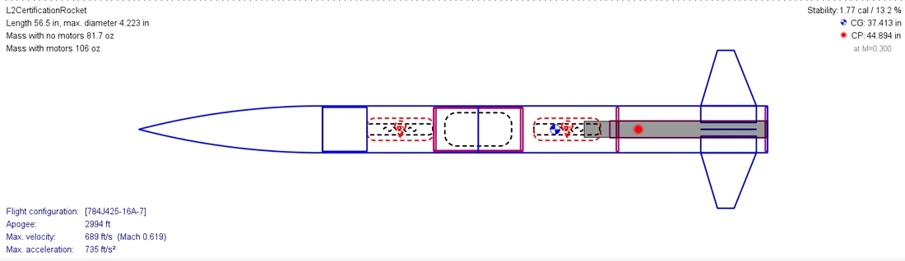

The certification
Tripoli’s Level 2 certification allows a flyer to use J, K, and L class motors. It takes a written exam and a successful flight and recovery of a rocket the flyer built. I passed the exam on September 9, 2026 and flew three days later.
The rocket
I designed the rocket in OpenRocket and built it myself. For Level 2 I glassed the airframe, then added a 3D-printed avionics bay of my own design and two Missile Works RRC2+ altimeters.


Dual deployment means two parachute events. A small drogue comes out at apogee so the rocket falls fast and drifts less. The main parachute opens close to the ground for a soft landing. Each altimeter fires its own charge for each event. That makes four charges, and either altimeter alone can recover the rocket.

The flight
- 2,739ft
- Apogee
- Within 9%
- Of the OpenRocket prediction
- 4
- Ejection charges across two altimeters
Problems with my motor casing on launch day meant I had to buy a replacement motor at the site. It was a J-class motor, but its exact designation is unknown.
The rocket reached 2,739 ft, within 9% of the 2,994 ft that OpenRocket predicted, and recovered under dual deployment. That flight earned the certification.
Level 1 flight
This rocket started as my Level 1 rocket. I earned Level 1 with the same airframe before I added the fiberglass. That flight used an H255 motor with no avionics, and the motor’s own ejection charge separated the rocket for recovery.